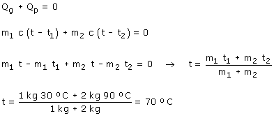
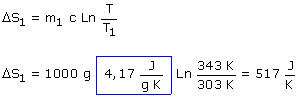
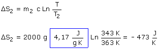

|
Para empezar hay que calcular la temperatura de equilibrio de la mezcla:  Variación de entropía del agua fría:  Variación de entropía del agua caliente:  Variación de entropía del sistema: ΔS = (517 - 473) J / K = 44 J / K Si el recipiente que contiene la mezcla está bien aislado el entorno no intercambiará calor con la mezcla y por tanto ΔS' = 0 La variación de entropía del Universo será: 0 + 44 J / K = 44 J / K (Ha aumentado) |